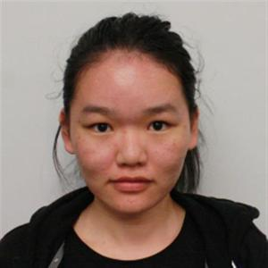

Please join the Slack workspace at this link:
https://join.slack.com/t/cs252fall2021/shared_invite/zt-uzkzb7ba-al1LL6rL6XE9Hp_pnDgNsg
You may contact the TAs at the following email address:
cs252ta@cs.byu.edu
The TAs are located in 1154 TMCB. Please come in any time during TA hours, no need to schedule an appointment or put your name on a queue. You may have to wait in a line once you arrive. Please note that students are not allowed to work in the TA office.
The TA work schedule is still tentative and changes to the schedule are likely.
The time a TA is able to spend with an individual student may be limited to 5 minutes. A student may have additional time with a TA after other students have had an opportunity for time with a TA. This policy is intended to give all students equal and fair access to the TAs.
| Mon | Tue | Wed | Thu | Fri | |
|---|---|---|---|---|---|
| 8:00 | Luke, Xinru | Xinru | Luke, Xinru | Xinru | Luke, Xinru |
| 9:00 | Luke | Chris, Xinru, Walker | Luke | Chris, Xinru, Walker | Chris, Luke, Walker |
| 10:00 | Xinru, Walker | Chris, Xinru, Walker | Timothy, Xinru | Chris, Xinru, Walker | Brian, Xinru |
| 11:00 | Brian, Walker, Xinru | Devotional | Brian, Walker, Xinru | Brian, Chris, Xinru | Chris, Walker, Xinru |
| 12:00 | Timothy, Jonathan, Walker | Chris, Jonathan | Timothy, Jonathan, Walker | Chris, Jonathan | TA Meeting |
| 1:00 | Timothy, Jonathan | Brian, Jonathan | Timothy, Jonathan | Brian, Jonathan | Brian, Timothy, Jonathan |
| 2:00 | Timothy, Jonathan | Brian, Timothy | Timothy, Jonathan | Brian | Brian, Timothy, Jonathan |
| 3:00 | Brian, Timothy | Timothy, Luke | Brian, Timothy | Luke | Timothy, Jonathan |
| 4:00 | Brian, Xinru | Luke | Brian, Xinru | Luke | Xinru, Jonathan |
| Brian | Chris | Jonathan |
|  | |||
| Luke | Timothy | Walker | Xinru |